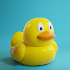 Krubber Duckiez Krubber Duckiez OG 300 是一个 NFT（非同质代币）系列。存储在区块链上的数字艺术品集合。 ▶ 有多少 Krubber Duckiez OG 300 代币？ 总共有 300 个 Krubber Duckiez OG 300 NFT。目前，146 位车主的
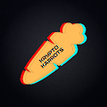 KryptoKarrots ▶ 什么是 KryptoKarrots？ KryptoKarrots 是一个 NFT（非同质代币）集合。存储在区块链上的数字艺术品集合。 ▶ 有多少 KryptoKarrots 代币？ 总共有 570 个 KryptoKarrots NFT。目
KUJIRA NO KONTON - Gen 1 在 2024 年减半之后，鲸鱼控制并统治了一个血流成河、分裂达到顶峰的独裁政权。 在这个混乱的世界里，人类和鲸鱼不是生活在一起的，而是彼此撕裂的。 这个 Manga-NFT
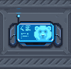 Kuma Tracker Kuma Tracker是一种结合Human和Kuma技术制造的特殊设备。 它用于定位 Kuma 和 $PAW。 这款独家设备具有无与伦比的实用性，并且仅限于 100 件。
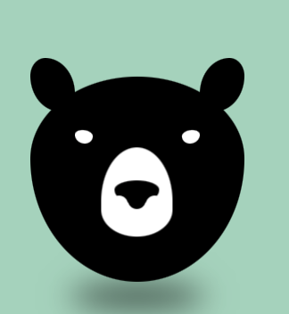 Kuma World Stealth FREE MINT5555 互动 kumas 盯着你看，它不仅仅是 jpeg 或 gif，是一个互动页面。每个钱包免费 1 首 3333 kumas 是免费的，其余的或者如果你想要更多的 kumas，每个支付 0,00666 etherNFT
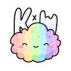 Kumo X World Events NFT stats 为您提供有关 NFT 空间的最新信息。如果您想找到最好的 NFT 购买、即将推出的 NFT 项目、最昂贵的 NFT 是什么——我们将为您提供您需要的数据、图表、见解和新
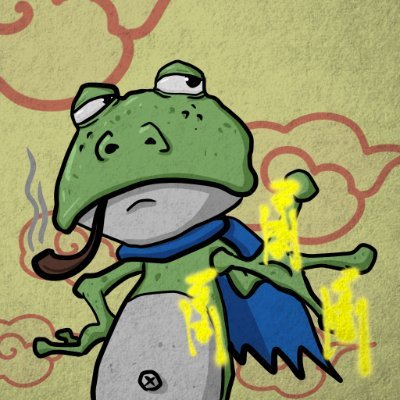 KungFu Pepe Club 功夫佩佩俱乐部。NFT stats 为您提供有关 NFT 空间的最新信息不要惹我生气。 或者看你的屁股。如果您想找到最好的 NFT 购买、即将推出的 NFT 项目、最昂贵的 NFT 是什
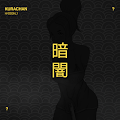 Kurachan Kurachan，或 kChan，是一个基于实用程序的限时收藏品，与 Kurayami 交织在一起。：可以质押以赚取 $KURA更多 kChan 质押 = 更多收益 质押在一起可提
Kurayami Kara Genesis 从我们聚集的阴影中 | 从我们升起的阴影中，Kurayami Kara Genesis 是您通往 4,000 个独特叛乱 NFT 的门户。持有者将获得空投、突变和尚未展开的 Kuryami Kara 故事情节的血
Kurayami Mint Pass Genesis Mint Pass 3 免费薄荷糖进入 The Hidden Early access▶ 什么是仓水薄荷通行证？ Kuryami Mint Pass 是一个 NFT（非同质代币）系列。存储在区块链上的数字艺术品集合。 ▶ 有多
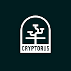 Kwang Boost Cryptorus Kwang 专属会员升级NFT stats 为您提供有关 NFT 空间的最新信息。如果您想找到最好的 NFT 购买、即将推出的 NFT 项目、最昂贵的 NFT 是什么——我们将为您提供您需要的
Kyle Reader Editions ▶ 什么是 Kyle Reader Edition？ Kyle Reader Editions 是一个 NFT（不可替代令牌）集合。 存储在区块链上的数字艺术品集合。 ▶ 有多少 Kyle Reader Editions 代币？ 总共有 1 个 Kyle Reader Editions NF
KyotoAngels 每月 10% 回报的质押开放 - 现在注册京都天使正在冒险进入元宇宙检查我们的 - 路线图京都天使是由 UwU Mistlabs 制造的 10000 个卡哇伊娃娃的集合。 它们的灵感来自我们祖先
L.Dre Lofi Guy NFT 联合创始人 L.Dre，是一位新兴制作人，目前在全球音乐界崭露头角。 他的风格融合了柔和的 lo-fi 旋律和摇摆的 bap bap 节奏，创造出流畅、凉爽且易于聆
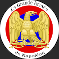 La Grande Armee de Napoleon La Grande Armée是拿破仑战争期间法国皇帝拿破仑·波拿巴指挥的法国帝国军的主要军事组成部分。 从 1804 年到 1809 年，它赢得了一系列军事胜利，使法兰西帝国能
La Table Du Chef - PASS 任务很简单：通过允许每个 NFT 持有者在建立一个伟大的星级厨师的过程中预订一张“与众不同”的桌子，获得独特的体验。La Table Du Chef - PASS NFT - 问题常见（FA
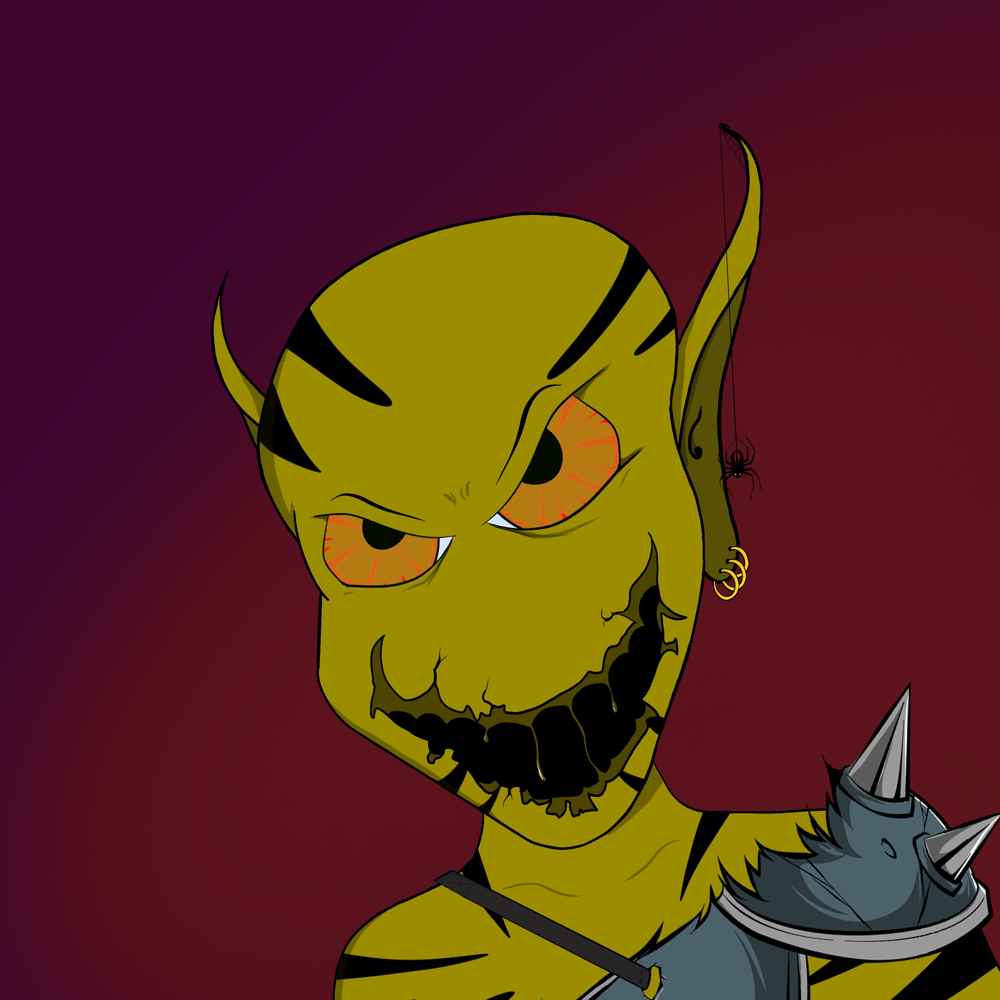 Lab GoblinZ 警告！ 警告！ 警告！ 10000 LabGoblinZ 是已故 Labcoats 的阴暗意图，表现为一个物理存在，我们需要 Kongz 的力量来团结并控制这些阴暗的生物。并在实验室中肆虐。 因此，我们试图阻
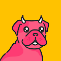 Labo Pupz 1 Labo for 1 Pupz (Airdrop) 持有人快照时间 02/13/2022，声称 pupz 继续 https://pupz.labonft.xyz/有时 Labo 很孤独。 这就是为什么每个 Labo
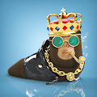 Lad Life ▶ 什么是小伙子生活？ Lad Life 是一个 NFT（不可替代代币）集合。 存储在区块链上的数字艺术品集合。 ▶ Lad Life 代币有多少？ 总共有 3,333 个 Lad Life NFT。 目前，52
Lady Apes Of Space Official 专为 AoS NFT 所有者分发。 Apes Of Space 持有者将能够从 12 月 17 日起免费获得薄荷 Lady Apes Of Space。 猿猴与猿猴的比例为1:1，如果您拥有5只原始猿，则可以免费铸
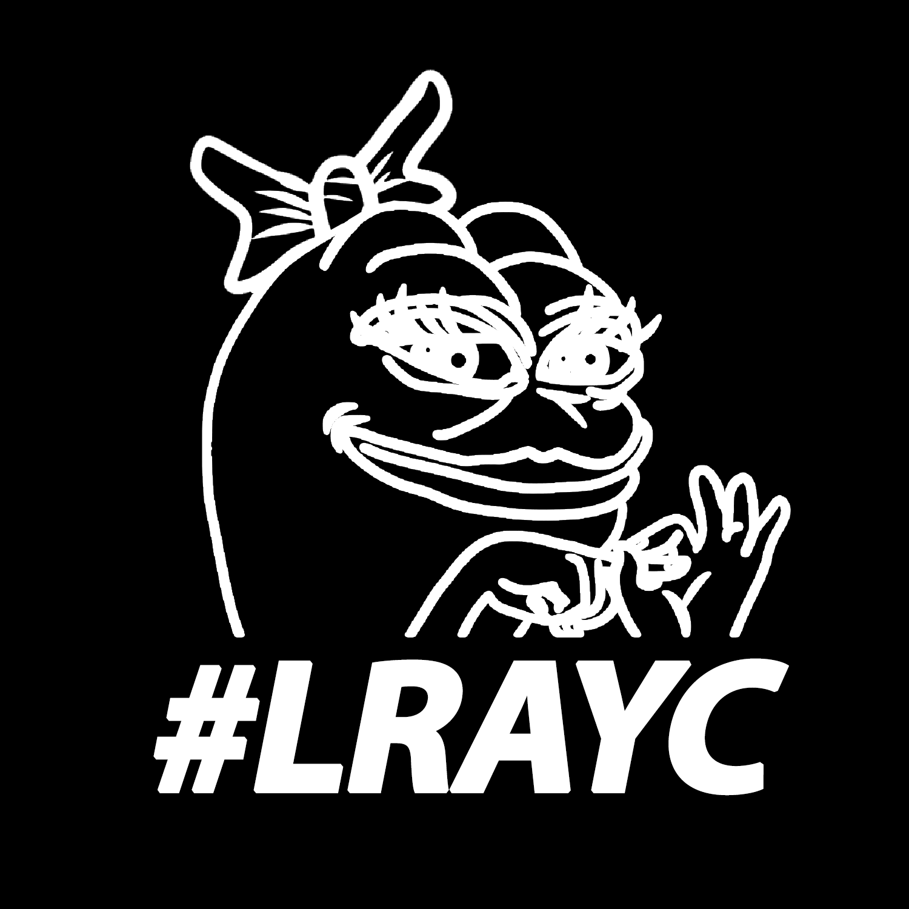 Lady Rare Apepe YC MINT LIVE - 造币厂官方网站 | TWITTER Lady Rare Apepes Yacht Club：NFT、文化、氛围和模因的交集#LRAYC Lady Rare Apepes 是对 NFT 文化中最具标志性的两部作品的致敬：@Bore
Laika League ▶ 什么是莱卡联赛？ Laika League 是一个 NFT（Non-fungible token）集合。 存储在区块链上的数字艺术品集合。 ▶ 莱卡联盟代币有多少？ 总共有 905
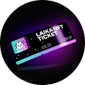 LAIKA NFT TICKET Leica NFT 3 月 23 日纪念狗日的 NFT 项目 Leica NFT 向持有者发行定制宠物 PFP，并将收益捐赠给动物福利组织。 为纪念3月23日的狗日，和我们一起实践对动物的爱！为
Lamerz ▶ 什么是 Lamerz？ Lamerz 是一个 NFT（不可替代代币）集合。 存储在区块链上的数字艺术品集合。 ▶ 存在多少个 Lamerz 代币？ 总共有 1,000 个 Lamerz NFT。 目前，45
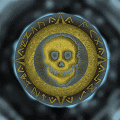 Land of Sages Genesis Pass ▶ 什么是圣域创世关？ 贤者之地创世通行证是一个 NFT（非同质代币）集合。 存储在区块链上的数字艺术品集合。 ▶ 先贤之地创世通行证有多少？ 总共有 1 个
lander mfers ▶ 什么是着陆器 mfers？ Lander mfers 是一个 NFT（非同质化代币）集合。 存储在区块链上的数字艺术品集合。 ▶ 有多少个lander mfers 代币？ 总共有 975 个 Lander mfer
LandersChicks ▶ 什么是 LandersChicks？ LandersChicks 是一个 NFT（非同质代币）集合。 存储在区块链上的数字艺术品集合。 ▶ 有多少个 LandersChicks 代币？ 总共有 536 个 LandersChicks NFT。
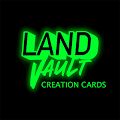 LandVault Creation Game ▶ 什么是 LandVault 创建游戏？ LandVault Creation Game 是一个 NFT（不可替代令牌）集合。 存储在区块链上的数字艺术品集合。 ▶ 有多少个 LandVault Creation Game 代币？ 总共有 1,980 个 LandVault Creation Game NFT。 目
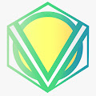 LandVersePlots Landverse 是一款带有 NFT 质押的 P2E 游戏，一个具有 2% DApp ETH 反射的 DAO，一个包含 Lands 和 Villagers 等 NFT 的市场。▶ 什么是 LandVersePlots？ LandVersePlots 是一个 NFT（不可
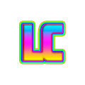 LARRY CARLSON (Official) 《高时代》杂志称他为“下世纪的萨尔瓦多·达利”。许多人认为他是网络迷幻艺术运动的教父。拉里·卡尔森 (Larry Carlson) 是一位富有远见卓识的传奇艺术家，他利用
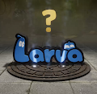 LARVA - OFFICIAL Aniverse NFT 是一个名为“ANIVERSE”的角色元节，来自不同动画的各种角色聚集在一起您可以使用自己的 PFP NFT 成为我们元节中的角色主角。“LARVA”是
Larva Wolf Larva Wolves 是 Wolf Club 86 的创始人为您带来的 FREE TO MINT 系列。它们是 Larva Lads 的衍生品。艺术品和元数据完全在链上并且是随机生成的。Larva Wolf NFT - 常见问题（FAQ）在
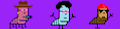 LarvaLarms 幼虫 幼虫有腿和手臂。他们喜欢四处走动。 Larm 拥有的腿越多，它的移动速度就越快。LarvaLarms NFT - 常见问题（FAQ） ▶ 什么是幼虫？ LarvaLarms 是一个 N
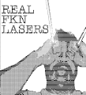 LaserLewDude LaserLewDudes ERC 1155 合同。空投和狗屎。LaserLewDude - 1155 NFT - 常见问题（FAQ） ▶ 什么是 LaserLewDude - 1155？ LaserLewDude - 1155 是 NFT（替代品）集合。在区块链上的数
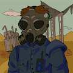 Last Man Alive Last Man Alive 收集了 4444 个随机生成的 NFT！LMA 持有者权益：放射性宠物养殖、Last Man Alive P2E 游戏、ERC20 LMA 代币 艰难时期已经到来。不是每个人都敢离开
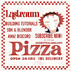 Lastraums Last Slice Last Slice Collective NFT NFT - 问题常见（FAQ） ▶ 什么是 Last Slice Collective NFT？ Last Slice Collective NFT 是一个 NFT（Non-fungible token）集合。在区块链上的数字收藏品存
Lau Hu Pao 为庆祝虎年，Lau Hu Pao 是由迪士尼前总裁兼艺术家 MochSarm 创作的 3,333 件生成的手绘老虎艺术收藏品。每件老虎艺术作品都采用酷炫且具有美学吸引力的服装和配饰，
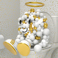 Lavatory Ones 洗手间 NFT - 常见问题 (FAQ) ▶ 什么是厕所？ Lavatory Ones 是一个 NFT（非同质代币）集合。存储在区块链上的数字收藏品集合。 ▶ 有多少个代币？ 一个厕所有一个。82位
Layer Zero Punks Layer Zero Punks 是第一个探索全链的朋克，利用 LayerZero 技术来遍历链。层零朋克 | ETH NFT - 常见问题（FAQ） ▶什么是零层朋克 |以太坊？ 层零朋克 | ETH 是一个 NFT（No
Lazy 8ight Yacht Club Official Lazy 8ight Yacht Club 包含 8,888 艘独特的、完全可穿越的 90 米游艇，您可以在元宇宙中探索和担任船长。Lazy 8ight 旨在弥合游艇世界、豪华酒店和 web3 技术之间的差距。 Lazy 8ight 拥
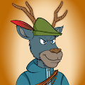 LAZY BUCKS NFT COLLECTION LAZY BUCKS NFT 是 1881 个 NFT 的集合，配备 150 多种手绘特征，适合各种野生动物探险。LAZY BUCKS NFT 系列 NFT - 常见问题 (FAQ) ▶ 什么是 LAZY BUCKS NFT 系列？ LAZY BUCKS NFT COLLECTION 是一个 NFT（非同
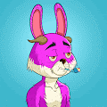 Lazy Bunny NFT Lazy Bunny NFT NFT - 问题常见（FAQ） ▶ 什么是懒兔 NFT？ Lazy Bunny NFT 是一个 NFT（Non-fungible token）集合。在区块链上的数字收藏品存储集合
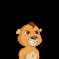 Lazy Cubs Official 来这里是为了从 Lazy Lions 的对手 Glitch 手中拯救元宇宙！ Lazy Cubs 是一组幼狮，它们是由现有的 Lazy Lion 饮用牛奶、果汁或 Lazy Special 或通过公开发售的 Lazy Cub 铸造而成。Lazy Cubs 官方
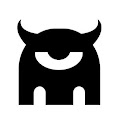 Lazy Monsters Space Club LAZY MONSTERS SPACE CLUB 是 Monsters Incorporated 宇宙中 1000 只独特怪物的家园，其中两个皇室成员拥有一个国王和一个王后怪物，他们曾经在阿凡达消失之前和谐相处，现在又回来恢复 ERC-721 上的和
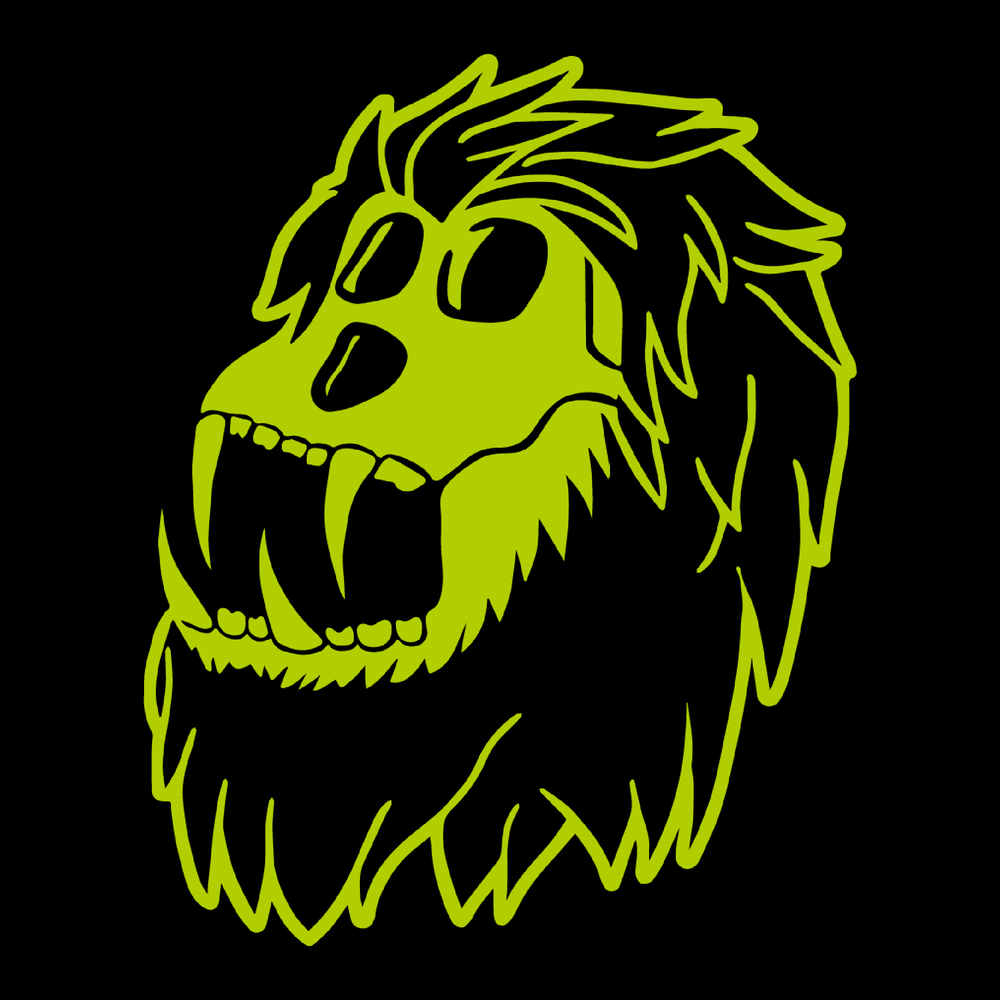 Lazy Mutant Ape Yacht Club 关于 LAYC 是生活在以太坊区块链上的 10,000 个独特 NFT 的混合集合。您的 Lazy Ape 将授予您专供会员使用的未来福利。 Lazy Ape Yacht Club 是 Apeverse 的“扩展包”。 每只猿都是独一无二的。